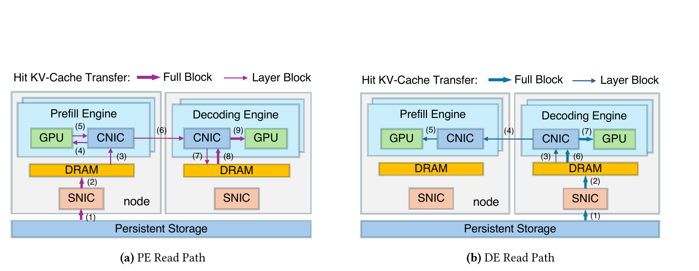
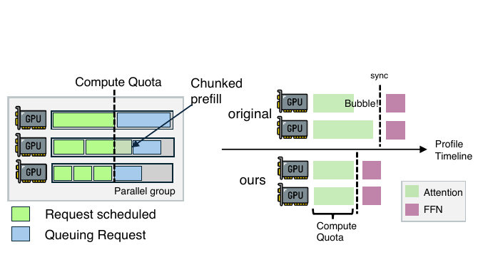
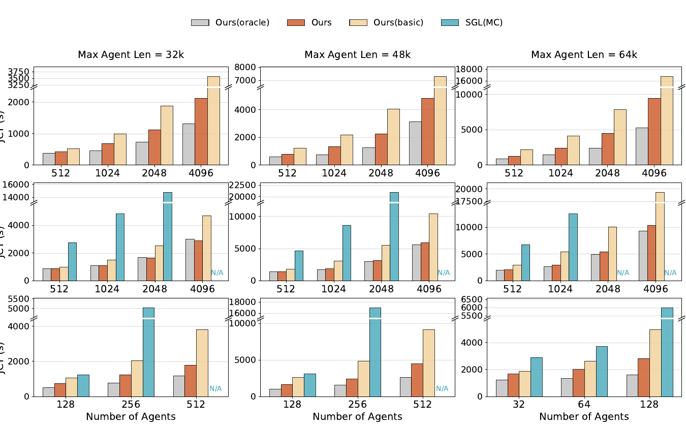
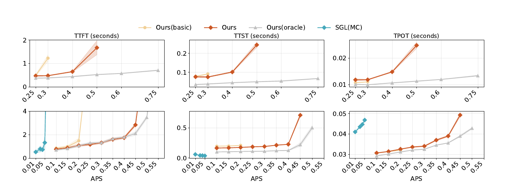
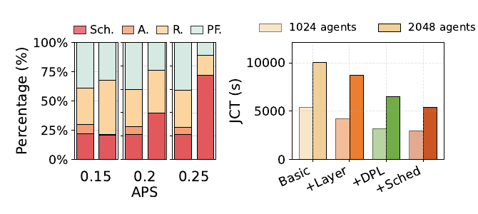

DualPath: Breaking the Storage Bandwidth Bottleneck in Agentic LLM Inference
在高 KV-Cache 命中、長上下文、短追加的 agentic LLM workload 中，DualPath 讓命中 cache 可由 prefill engine（PE）或 decode engine（DE）的 storage NIC 載入，再透過 RDMA 串回 PE，藉此把原本閒置的 DE I/O 頻寬轉成可排程容量；搭配 CNIC QoS 與跨／內 engine 排程後，作者在自家系統上報告 offline 對 Basic 最高 1.87×、online 可承載 arrival rate 平均 1.96×。 Abstract、§1 · PDF pp.1–2 §7.3 · PDF p.10 · Fig. 7 §7.4 · PDF pp.11–12 · Fig. 10
分析 這不是「減少 KV bytes」的方法，而是「重新分配 KV bytes 經過哪些 NIC」；因此它與量化、部分重算、DRAM cache 等手段原理上互補，但效益會隨 cache hit rate、append／generation 長度與網路拓撲而大幅改變。
文章目錄
P/D 分離、多輪 KV 重用、SNIC 與 Layer-wise Transfer
先建立後文會反覆用到的四個概念
| 概念 | 本篇所需理解 | 後文用途 |
|---|---|---|
| KV-Cache 命中 | 舊 token 的 attention keys／values 可重用，省掉重算；但若不在 HBM，仍要把命中 bytes 從外部 storage 搬回來。 | 解釋為何「少算」可能反而讓 I/O 成為主瓶頸。 |
| Prefill–Decode disaggregation（PD 分離） | Prefill engine（PE）處理 prompt；decode engine（DE）自回歸產生 token。傳統流程由 PE 載入命中 KV，prefill 後再把完整 prompt KV 給 DE。 | 界定 PE-read 與新增 DE-read 的角色和方向。 |
| Layerwise prefill | 一次只讓當前 layer 的 KV 常駐 HBM，擴大 token batch，並讓 transfer 與 compute 逐層重疊。 | 解釋 Layer Block、compute quota 與細粒度 copy 開銷。 |
| 分離的 SNIC／CNIC fabrics | Storage NIC（SNIC）連 3FS；compute NIC（CNIC）承載 GPU collective／RDMA。兩個網路原本隔離，頻寬也不對稱。 | 解釋如何借 DE SNIC 載入，再用 CNIC 把 KV 送回 PE，以及為何必須做 QoS。 |
§2.1–2.3 · PDF pp.2–3 §4.1 · PDF p.5 · Fig. 4
從多輪 agent 行為到 I/O 壓力
Agent 反覆呼叫工具、接收短輸出，下一輪 prompt 又帶上全部既有上下文。舊 token 的 KV 大多命中，新 append 才需 prefill 計算，形成「長 context、短 append、高 reuse」。64K coding trace 平均有 157 輪、context 32,721 tokens、每輪 append 429、generation 176；以 context 與 append 的比例估算，作者報告約 98.7% KV-Cache hit rate。 §2.2 · PDF p.3 · Fig. 2 §3 · PDF pp.3–4 §7.2 · PDF p.9 · Table 2
從 I/O 壓力到資源不平衡
論文以典型 8-GPU 節點說明：每張 GPU 可配一張 400 Gbps CNIC，但整台機器只共享一張最高 400 Gbps SNIC，compute 與 storage network 又彼此隔離。既有 PE-only ingress 使 PE SNIC 持續飽和、DE SNIC 閒置；GPU 因等 KV 而 underutilized。作者另觀察 model collectives 是 sub-millisecond bursts，遂把 compute fabric 的空檔視為把 DE-read KV 串回 PE 的機會。 §2.3 · PDF p.3 §3 · PDF p.4 · Figs. 1、3
| 模型 | GB/PFLOP（16K–64K） | 解讀 |
|---|---|---|
| Qwen2.5-32B（FP16 KV） | 117–267 | 搬移量相對計算最高，最易 storage-bound |
| GPT-OSS-120B | 47–95 | 仍有很高的 I/O／compute 比 |
| Qwen3-235B-A22B | 39–60 | MoE 也不免受載入量限制 |
| DeepSeek-V3.2 660B | 13–36 | 稀疏 attention 降低計算後，比值高於 V3 |
| DeepSeek-V3 660B | 4.8–5.8 | 比較組中最低 |
作者主張 從 NVIDIA Ampere 到 Blackwell，圖中的 dense FLOPS 成長 28.8×，PCIe bandwidth 僅 2.0×、HBM capacity 僅 2.4×；作者把 I/O-to-compute ratio 的 14.4× 下降視為 agentic inference storage bottleneck 會加劇的硬體趨勢。 §3 · PDF p.4 · Fig. 3
分析 通往問題定義的橋：因此下一節真正要解的不是「怎麼讓 prefill kernel 更快」，而是「已知一輪有大量命中 KV 必須回載時，如何解除 PE SNIC 的單點 ingress 限制，同時不把瓶頸移到 CNIC、DRAM、HBM 或 collective tail latency」。
有了這些背景，下一個問題是：為何舊 KV 全擠進 Prefill SNIC，GPU 反而在等 I/O
為何舊 KV 全擠進 Prefill SNIC，GPU 反而在等 I/O
可觀測症狀：GPU 在等一張已飽和的 PE SNIC
在長 context、短 append 的多輪 workload 中，每輪 prefill 的新計算量很小，但必須回載幾乎整段命中 KV。PD 架構又只允許 PE 從 storage 讀取，於是 throughput 隨 PE SNIC 飽和而封頂，即使 DE SNIC 與 GPU 尚有餘裕。Figure 1 將既有系統示意為 PE SNIC 100% utilization、GPU 約 40% utilization；這是作者的瓶頸示意，不是 §7 的量測表。 §1 · PDF pp.1–2 · Fig. 1 §3 · PDF pp.3–4
根因：需要搬的 bytes 與能提供 ingress 的角色錯配
對每個 request，cache hit 增加會降低 prefill FLOPs，卻不會消除命中 KV 的 storage bytes；而現行角色規則把這些 bytes 全部綁在 PE ingress。問題因而不是 aggregate cluster storage bandwidth 不足，而是可用 bandwidth 沒有被同時動員。 §3 · PDF pp.3–4 · Table 1
最近的既有解法為何仍不夠
Mooncake 類 distributed DRAM pool 可提高 memory-tier hit rate，但 RL rollout 的 host DRAM 需容納 offloaded training state，online working set 又可能大到 SSD 更具成本優勢；HCache／TARDIS／Phoenix 等方向則減少讀量或 retrieval overhead。作者指出，這些方法仍沿用單一 ingress，沒有解除 PE／DE SNIC 之間的結構性不平衡。 §1 · PDF p.2 §9 · PDF pp.13–14
由根因推導出的成功條件
| 需求 | 要避免的失敗 | 可驗證指標 |
|---|---|---|
| R1｜池化 ingress | PE SNIC 飽和、DE SNIC 閒置 | Offline JCT、online APS capacity、各 SNIC max/avg traffic ratio |
| R2｜逐層串流 | 完整 prompt KV 佔滿 HBM，或 transfer 無法與 prefill overlap | Layerwise 累積 ablation、Oracle gap |
| R3｜隔離 model communication | 新增 KV traffic 阻塞 EP／TP／CP collectives | TTST／TPOT 不劣化；理想上還需 QoS on/off tail test |
| R4｜聯合平衡 GPU、SNIC、HBM | 雙路徑只把 hotspot 搬到另一側，或 DP peers 互等 | Storage-traffic 與 attention-time max/avg ratio |
| R5｜部署範圍內可擴展 | CNIC、DRAM、central scheduler 成為新瓶頸 | Bandwidth inequalities、weak scaling、scheduler CPU |
§4.2–4.3 · PDF pp.5–6 · Eqs. 1–9 §7.5 · PDF p.12 · Figs. 12–14 §7.6 · PDF p.13 · Table 3
輸入、狀態、決策與約束
| 類別 | 內容 |
|---|---|
| Request 輸入 | cached token 數、新增 prefill token 數 (bsz)、預計 context／request length、decode 生成長度與 KV 命中位置 |
| Engine 狀態 | 未完成 request 數 seq_e、未完成 token 數 tok_e、node 讀取 queue read_q[n(e)]、DE 可用 HBM |
| 控制輸出 | PE／DE 指派、KV 由 PE 或 DE 讀取、PE forward batch 與 chunk size；目前不把單一 request 拆到兩路同讀 |
| 硬限制 | HBM capacity、每張 CNIC 與每 node SNIC／DRAM bandwidth、可配置硬體 QoS、PE／DE ratio |
| 最佳化目標 | Offline 降低整批 rollout 的 job completion time（JCT）；online 提高在 TTFT ≤ 4 s、TPOT ≤ 50 ms 下可承載的 agents per second（APS） |
§6.1–6.2 · PDF pp.7–9 · Algorithm 1、Figs. 5–6 §7.4 · PDF p.11 §A.4 · PDF p.16
分析 DualPath 解的不是通用 KV eviction／placement 問題。評估中 DualPath、Basic 與 Oracle 的 hit length 由 client 端直接計算，只允許 trajectory 內命中且假設不需 eviction；因此其核心問題可更精確地描述為「已知命中長度後的 KV 回載路徑與執行負載平衡」。 §A.4 · PDF p.16
DualPath 與多數 KV-Cache work 的差別，在於它不先減少、壓縮或快取 bytes，而是改變 bytes 可從哪一側進入系統。以下只比較論文直接描述的技術定位；除 SGL(MC) 外，相關工作均未做 head-to-head 實驗。 §9 · PDF pp.13–14
| 系統／路線 | 主要作法 | 相對 DualPath 的差異 | 本文實證 |
|---|---|---|---|
| Mooncake、TokenLake | 分散式 DRAM／segment-level prefix cache pool，提高 memory-tier hit | DualPath 直接面向外部 storage，降低大 DRAM pool 需求並平衡所有 SNIC；原理上可與中間 DRAM cache 疊加 | 沒有公平的純系統對照；Mooncake 只嵌在 SGL(MC) |
| Strata | Hierarchical cache、GPU-assisted I/O 與 cache-aware scheduling co-design | 論文把它歸為 single-path I/O 優化；DualPath 以 PE／DE 雙 ingress 聚合 SNIC | 未比較 |
| KVPR、TailorKV | 部分重算重疊、layer-granular hybrid quantization，降低單一路徑 bandwidth 壓力 | 減少／壓縮搬移量；DualPath 重分配路徑，理論上可互補 | 未比較 |
| HCache、TARDIS、Phoenix | 減少需要取回的 KV 或降低 retrieval stack overhead | 作者認為沒有處理 PE／DE 之間的 storage-I/O imbalance | 僅 Introduction 概括 |
| LayerKV、PrefillOnly | Layerwise KV 管理，只讓單層 cache 常駐 HBM，擴大 prefill batch | 是 DualPath 直接採用的基礎，不是雙路徑創新 | 只有自家「Basic+Layer」累積消融，未重跑原系統 |
| DistServe、Splitwise | 把 prefill／decode 放到不同 GPUs，以不同 parallelism 與資源配置隔離兩階段 | DualPath 建在 PD disaggregation 之上，修補其 PE-side storage bandwidth 不平衡 | 架構引用，非 baseline |
| SGL(MC) | SGLang + HiCache + Mooncake Store + 3FS + Mooncake Transfer Engine | 唯一具體外部 baseline，但 DP／TP、model support、hit accounting 與實作均不同 | 作者明言不公平，部分配置 N/A，未報相對 speedup |
分析 最值得做的後續組合是「先減 bytes，再擴 ingress」：例如 layerwise quantization／partial recomputation 降低單次讀量，DualPath 再把剩餘讀量分散到 PE／DE SNIC。不過兩者都消耗 scheduler state 與 overlap window，疊加後未必線性相乘，需同一 stack 的 factorial evaluation。
問題的限制已經清楚；接著要抓住作者最關鍵的轉念。
讓 Decode 側也搬 KV：重新配平 Agentic Inference 的儲存頻寬
Problem
PD-disaggregated 系統把命中 KV-Cache 的外部讀取集中在 PE 的 storage NIC（SNIC）；PE 飽和時，DE 的 SNIC 卻可能閒置。
Root cause
Agent 每輪重讀很長的舊 context，卻只計算很短的 append；既有 PE-only ingress 因而把大量 I/O 壓在少數 SNIC，而不是算力上。
Gap
DRAM cache、減少 KV bytes 與單一路徑 I/O 優化能降低讀量，卻沒有把 DE 節點原本閒置的 SNIC 變成可用 ingress。
Insight
命中 KV 不必先到 PE。若先讀到 DE host buffer，再經高聚合頻寬的 compute network 傳給 PE，就能池化兩側 SNIC。
Mechanism
雙讀取路徑、Full／Layer Block、CNIC-centric RDMA copy、InfiniBand virtual-lane QoS，以及同時平衡 token、disk queue、HBM 的兩層 scheduler。
Evidence
3 個模型與 production-derived RL coding traces；offline JCT、online TTFT／TTST／TPOT、累積式 ablation，以及最高 1,152 GPU 的 weak scaling。
最重要的閱讀結論
- 瓶頸辨識有說服力。64K trace 平均 157 輪、context 32,721、append 429，對應約 98.7% 命中；此時每輪大量搬舊 KV、只計算少量新 token，storage I/O 容易壓過 prefill 計算。 §3 · PDF pp.3–4 · Table 1 §7.2 · PDF p.9 · Table 2
- 核心設計是頻寬池化。PE-read 走 storage→PE→DE；DE-read 走 storage→DE→PE，後者讓 DE SNIC 也替 prefill 載入命中 KV。兩者均逐層串流以配合 layerwise prefill。 §4.1 · PDF p.5 · Fig. 4
- headline 數字需帶條件。1.87× 是 DS 660B 對同一 in-house stack 的 Basic 最佳 offline speedup；1.96× 是 DS 27B 的 1.67× 與 DS 660B 的 2.25× online capacity gain 的平均，不含 Qwen 32B。 §7.3 · PDF p.10 · Fig. 7 §7.4 · PDF pp.11–12 · Fig. 10
- 完整系統不只 DualPath。累積 ablation 顯示 layerwise prefill、dual-path loading 與 scheduler 都貢獻 JCT 降幅；把完整 45.62% 降幅全歸因於雙路徑會過度解讀。 §7.5 · PDF p.12 · Fig. 12
分析 因果主線：短 append 使 prefill compute 下降 → 長命中前綴仍須由 storage 回載 → PE-only ingress 先耗盡 PE SNIC → DE SNIC 與 compute-fabric 空檔成為可回收資源 → DualPath 以 DE-read、QoS 與負載感知排程池化頻寬。這條鏈在目標 traces 上獲得端到端與 load-balance 證據，但內部系統 baseline、理想化 replay 與拓撲前提，仍使結果更像 production design case study，而非已證明可普遍移植的 serving 定律。
直覺成立後，再沿著一次完整執行看它如何落成系統。
雙載入路徑、CNIC Traffic Manager 與兩級 Scheduler
先跑一遍：一個新回合如何穿過 DualPath
- 回報狀態：PE／DE engine 以 group 為單位拉取任務，向 central scheduler 回報未完成 requests、token load、node storage-read queue；DE 另受剩餘 HBM 約束。
- 選 engine：scheduler 先挑 PE 與 DE，使 token、request count、HBM 與 read queue 不集中在少數 engines。
- 選 ingress：比較已選 PE node 與 DE node 的 read queue；整個 request 的命中 KV 由較短的一側載入。這一步才決定走 PE-read 或 DE-read。
- 逐層 prefill：storage 使用 Full Blocks，PE HBM 只接收當前 layer 的 Layer Blocks；命中 KV transfer 與新 append 的 attention computation overlap。
- 組成 DE state：PE-read 把 hit+miss KV 送往 DE；DE-read 已持有 hit KV，PE 只回傳新 append 的 miss KV。DE 將完整 prompt KV 搬入 HBM 後開始 decode。
- 保護 latency：所有 GPU 進出流量由 paired CNIC 執行 RDMA copy；model collectives 走高優先 VL，KV traffic 走低優先 VL。Decode 每累積一個 full block（文中例為 64 tokens）就持久化。
§4.1 · PDF p.5 · Fig. 4 §5 · PDF pp.6–7 §6 · PDF pp.7–9
元件如何回答需求
| 元件 | 輸入／訊號 | 決策與動作 | 對應需求 |
|---|---|---|---|
| Dual-path data plane | PE／DE read queue、命中 KV blocks | 選 PE-read 或 DE-read，逐層把 KV 串到 PE，再在 DE 合併完整 prompt state | R1 ingress 池化、R2 逐層串流 |
| Traffic manager | H2D／D2H、PE↔DE、storage I/O | 把 GPU I/O 收斂到 paired CNIC，以硬體 VL QoS 排優先級 | R3 collective 隔離、R5 避免新瓶頸 |
| Inter-engine scheduler | seq_e、tok_e、read_q[n(e)]、DE HBM | 挑 PE／DE 與讀取側，抑制 overloaded engines | R1、R4 聯合平衡 |
| Intra-engine scheduler | (cached, bsz) 與 profile-based layer time | 依 compute quota 做 FIFO packing／chunked prefill | R2 overlap、R4 減少 DP bubble |
| Full／Layer Blocks | Storage trie 與當前 layer | Storage 端維持 Full Block，執行時直接切成／串接 Layer Blocks | R2 降低 HBM footprint |
§4 · PDF p.4 §A.5 · PDF pp.16–17
兩條 KV-Cache 載入路徑（R1、R2）
路徑 A：PE read（既有路徑）
- SNIC 把命中 token 的 Full Blocks 讀到 PE host DRAM buffer。
- 每一層開始前，把該層 hit KV 的 Layer Blocks 搬進 PE HBM。
- PE 計算 cache-miss／新追加 token 的 KV；再把 hit+miss KV 逐層送往 DE buffer。
- 重複所有 layer，傳輸與 prefill 計算重疊；DE 最後把完整 prompt KV 搬入 HBM 開始 decode。
路徑 B：DE read（新增路徑）
- DE SNIC 先把命中 KV 讀進 DE buffer。
- 每一層 prefill 前，DE 透過 compute network RDMA 把該層 hit KV 送至 PE HBM。
- PE 只把新 token 的 miss KV 傳回 DE 並與 hit KV 合併；不必把舊 KV 再傳一次。
- 完整 prompt KV 已在 DE buffer 後，再做 H2D 並釋放 host buffer；decode 每累積一個 full block（文中例為 64 tokens）便寫回 storage。
分析 DE-read 之所以有用，是它把 PE SNIC 的工作轉移到 DE SNIC；代價不是消失，而是增加 DE DRAM、CNIC 與一次 H2D 壓力。作者選 host buffer 而非讓完整 KV 直接常駐 DE HBM，是以額外搬移換取較低 HBM 佔用與較低 preemption 風險。
CNIC-centric traffic manager（R3）
DualPath 不直接讓 CUDA copy engine 或 GPUDirect Storage 自行穿越 PCIe，而是先把 storage data 放到 host DRAM，再向 GPU 的 paired CNIC 提交 local RDMA Write；D2H／store 則反向操作。如此一來，H2D、D2H、PE↔DE KV 與 model collective 都經過 CNIC，可使用同一組硬體 QoS。 §5、§5.2 · PDF p.7
在 InfiniBand 上，model collective 被放入高優先 virtual lane（VL），KV traffic 放入低優先 VL；weighted round robin 約為高優先保留 99% bandwidth，低優先保有少量配額避免 starvation。論文主張 RoCE 可用 DSCP、traffic class 與 PFC 實作相同概念，但沒有 RoCE 實驗。 §5.1 · PDF p.7 §A.1 · PDF p.16
作者主張 對大量小 chunks，單次 cudaMemcpyAsync submission 約需 5–7 μs，RDMA Write work request 約 1 μs，且後者可用 doorbell batching 攤提。這是提交開銷比較，不是完整 copy latency 或 throughput 曲線。 §5.2 · PDF p.7
Inter-engine scheduler（R1、R4）
每個 engine 回報 seq_e、tok_e 與 node 級 read_q[n(e)]。PE 被分成：tok_e > β 的 overloaded 類別、queue 短且 token 未超標的首選類別、queue 長但 token 未超標的備選類別；scheduler 保持 request FIFO，先在首選類別選 tok_e 最小者，再退到備選類別。 §6.1 · PDF p.8 · Fig. 5、Alg. 1
DE 先在 engine groups 間以總 tok_e 最小者分流，再在 group 內排除 HBM 不足者；以閾值 Z 區分高 token DE，優先在低 token 類別中選 seq_e 最小者。PE／DE 選定後，整個 request 由兩側 node 中 read queue 較短的一側讀取；單一 request 同時拆成雙路讀取被留作 future work。
Intra-engine scheduler（R2、R4）
PE 將每個 request 表成 (cached, bsz)，用理論 attention 工作量與預先 profiling 的映射估計 layer time。它依 FIFO 填入 request，直到預測時間碰到 compute quota；下一個 request 若放不下，就二分搜尋較小的 bsz′ 做 chunked prefill。這讓 data-parallel GPUs 的 attention time 更接近，減少同步進入 FFN 前的 bubble。 §6.2 · PDF pp.8–9 · Fig. 6
Block layout（R2）
Layer Block 形狀為 [1, tokens, bytes]，只存一層；Full Block 為 [layer, tokens, bytes]，用於 storage trie。將 n 個 Layer Blocks 直接串接即可形成 Full Block，避免額外 layout conversion；代價是 layerwise prefill 讓 block 數量增加約 layer 倍，要求高效的小 block 傳輸。 §A.5 · PDF pp.16–17
每對 PE–DE 的流量
令 P, D 分別為 prefill／decode nodes 數；每 node 有 g 張 GPU，每張 paired CNIC bandwidth 為 B；每 node SNIC bandwidth 為 sB，DRAM bandwidth 為 M。若 storage bandwidth 已滿載且所有 pair 均衡，PE-read 與 DE-read 在單一 PE–DE pair 上的流量為：
T_p, T_c 的單位都是 bandwidth；分母反映 node／GPU pairs 如何分攤一個 node 的 SNIC 流量。
作者給出的 bottleneck-free P/D 範圍
分別限制 PE CNIC write、DE CNIC read／write 與 DE DRAM 壓力後，論文合併為：
下界避免 PE write 壅塞；三個上界依序來自 DE read、DE write 與 DE DRAM。P/D 太小會讓 PE 端承受過多 DE-read 回流，太大則把壓力推到 DE CNIC／DRAM。代入 g=8, s=1, M≈500 GB/s、Bs≈50 GB/s，作者得到 1/7 ≤ P/D ≤ 7/2。
這個範圍用來檢查部署配置是否在端點頻寬模型內可行；runtime scheduler 並不求解此不等式，而是在固定 P／D 配置下盡量維持推導所需的 load balance。 §4.2–4.3 · PDF pp.5–6 · Eq. 9 §6 · PDF pp.7–9
分析 此式是理想化 capacity accounting，不是 arbitrary workload 下的 latency 保證。推導先假設 GPU–NIC 位於相同 PCIe switch、task 已負載平衡、storage read 可滿載，且 compute network 無 congestion；未建模 switch bisection、burst queueing、storage jitter 或 tail latency。
分析 Eq. (1) 有條件缺口：PE CNIC read 壓力被寫為 2T_pDg=2Bs/g ≤ B，實際需要 s ≤ g/2；正文卻以「s ≤ g 在實務上成立」就推論永不成瓶頸。作者的 g=8, s=1 範例仍滿足較強條件，但「always bottleneck-free」的一般化並未由該代數支持。 §4.2 · PDF p.6 · Eq. 1
DE group 的負載閾值
R 是依 group 剩餘 HBM 得到的可排程 request 上界集合；E 為 group 內 DEs；Z 把「目前 token＋將加入 token」的平均值加 5% margin，用來辨識 high-token DE。
分析 係數 1.05 是 heuristic；論文沒有推導、敏感度 sweep 或線上重校準。Appendix 另把 α 設為 3 秒可讀 token 數、β 設為單 GPU 5 秒可處理 token 數，compute quota 固定 300 ms，均需事前 profiling。 §A.4 · PDF p.16
Online working set 估算
λ 為新 trajectories／秒，T̄ 為平均 JCT（秒），total_len_avg 為平均總序列長度；除以 2 是作者對 trajectory 逐步成長的平均化近似。這個乘積先得到 working-set tokens；換算 bytes 尚需模型的 KV bytes／token。作者對 DS 660B 報告的結果由 APS 0.1 時 69 GB 增至 APS 0.45 時 681 GB。
分析 Working-set 公式少了一個明示因子：正文的右式量綱是 tokens，而報告值是 GB；要維度一致，應再乘模型的 KV bytes／token。論文沒有在 §8.2 寫出該因子或換算細節，因此 69–681 GB 可視為作者報告值，但不能只由顯示的公式獨立重算。
{kind=link}

{kind=link}

方法看似合理，真正的問題是：實驗有沒有把這條因果鏈撐起來？
Offline／Online、Weak Scaling 與累積消融
先看 claim–test 對照
| 待檢驗主張 | 對照與控制 | 指標／判準 | 主要缺口 |
|---|---|---|---|
| C1｜PE-side SNIC 是主要瓶頸 | DS 27B；在每組 MAL／agent count 內固定 workload，比較 1P1D、1P2D、2P1D；觀察「可用 SNIC 數近似」的配置配對 | Offline JCT 是否近似 | 只測一個模型、三種 P/D 比，未直接量 GPU stall 與端到端 bytes |
| C2｜DualPath 提高 offline throughput | 同一 in-house stack 的 Basic／Ours／zero-I/O Oracle；三模型、三個 MAL、多種 agent counts | 整批 trajectories 的 JCT | Basic 同時缺 layerwise、DPL、新 scheduler，不能把全部 gain 歸因於 DPL |
| C3｜提高 online capacity 且不傷 decode | Poisson arrivals、固定 traces；Basic／Ours／Oracle，另列非公平 SGL(MC) | TTFT ≤ 4 s、TPOT ≤ 50 ms 下的 APS；TTST／TPOT 趨勢 | 沒有 tail percentiles，超過 SLO 的 TTST／TPOT 點不顯示 |
| C4｜各機制確實改善負載 | Basic 依序加入 Layerwise、DPL、Scheduler；另以 round-robin／without scheduling 比 max/avg | JCT 降幅、SNIC traffic 與 attention time max/avg | 累積式而非完整 factorial；QoS、CNIC copy 沒有獨立 ablation |
| C5｜控制面可擴展到大叢集 | 資源與 workload 同比例放大 | JCT／latency 是否維持、scheduler CPU | 只證明 weak scaling；不證明單一大 pool 優於同成本小 units |
§7.3 · PDF pp.10–11 · Figs. 7–9 §7.4 · PDF pp.11–12 · Figs. 10–12 §7.5 · PDF p.12 · Figs. 12–14 §7.6 · PDF p.13 · Table 3
實作
DualPath 建在 DeepSeek 的 in-house inference framework 上，約修改 5K lines；GPU kernels 組合使用 FlashMLA、DeepGEMM、DeepEP，storage backend 為 3FS，介面類似 io_uring 並採 kernel bypass。 §7.1 · PDF p.9
Testbed 與模型
| 每節點 GPU／CPU | 8× NVIDIA Hopper GPUs、dual processors；論文未提供確切 GPU／CPU 型號 |
|---|---|
| Compute fabric | 8×400 Gbps RDMA NICs／node，InfiniBand |
| Storage fabric | 1×400 Gbps storage NIC／node，連接 3FS；與 compute network 實體隔離 |
| Storage cache | cluster-wide 3FS 無內部 DRAM cache，作者稱可灌滿 400 Gbps SNIC |
| 模型 | DeepSeek V3.2 660B（MoE、DeepSeek Sparse Attention）、內部縮小版 DS 27B、Qwen2.5-32B（dense、GQA） |
| 數值精度 | Evaluation 的 weight／KV／activation precision 論文未提供；Table 1 的「KV 預設 FP8」只屬 motivation 計算，不能當成 §7 實驗設定 |
| 軟體版本 | SGLang baseline 為 commit 19089aa；CUDA、driver、InfiniBand firmware、3FS 版本與完整 in-house stack 版本論文未提供 |
Production agent traces
三個資料集都來自 production agentic RL training 的 coding workloads，每組 500 trajectories。Agent 在含已知 bug 與錯誤訊息的 repository sandbox 中反覆產生工具呼叫；評估採 trace replay，依原資料指定每輪 append 與應生成的 token 數。Figure 7 最高使用 4,096 agents，超過每組 500 條原始 trajectories；Appendix 說額外 trajectories 會重抽既有 trajectory 並 prepend 隨機 token round，但未報實際重複率。 §7.2 · PDF p.9 · Table 2 §7.3 · PDF p.10 · Fig. 7 §A.3 · PDF p.16
| MaxLen | Turns | Append／turn | Gen／turn | Total | Context |
|---|---|---|---|---|---|
| 32K | 60 | 608 | 148 | 28,639 | 17,183 |
| 48K | 106 | 474 | 172 | 42,607 | 25,120 |
| 64K | 157 | 429 | 176 | 55,958 | 32,721 |
Baselines 與配置公平性
| 名稱 | 定義 | 可支持的比較 |
|---|---|---|
| Basic | 未修改的同一 in-house framework | 作者只以 Basic→Ours 計算主要 speedup，實作控制最好，但 Basic 同時缺 layerwise、DPL 與新 scheduler |
| Oracle | 以 DualPath 為底，略過所有 disk reads、D2H／H2D 與 inter-PD KV transfer | 零 I/O 的理論上界，不是可部署 baseline |
| SGL(MC) | SGLang + HiCache + Mooncake Store + 3FS + Mooncake Transfer Engine | 作者明言因 implementation differences 不公平，故不報 Ours 對它的 speedup |
SGL(MC) 不支援 DS 27B；Qwen 32B 上 DualPath 使用 DP，而 SGL(MC) 因不支援 DP attention 使用 TP=8；SGL(MC) 在部分大配置執行失敗。這些差異使 Figure 7 的藍柱只適合作背景，不適合作 headline 相對比較。 §7.2 · PDF pp.9–10 §7.3 · PDF p.10 · Fig. 7
Resource 與 scheduler 設定
- 預設 P/D：DS 660B 為 2P4D、Qwen 32B 為 1P2D、DS 27B 為 1P1D；DS models 使用 EP+DP，Qwen 在 DualPath 中使用 DP。
- DualPath host DRAM：DeepSeek models 每 node 80 GB、Qwen 32B 每 node 320 GB；SGL(MC) 每 node 共 1.5 TB。
α：3 秒可讀 tokens；β：單 GPU 5 秒可處理 tokens；compute quota：300 ms。- Speculative decoding 全部關閉，所有組別都以 3FS 為 storage backend。
§7.2 · PDF p.10 §A.4 · PDF p.16
Offline／online 方法與指標
Offline：(n) 個 agents 同時開始 replay，測所有 trajectories 完成的 JCT。Online：agents 依 Poisson process 以指定 APS 到達，從第 0 輪連續 replay；SLO 設為 TTFT ≤ 4 s、TPOT ≤ 50 ms。實驗在 TTFT 超過 4 s，或 150 秒 sliding window 的 TTFT 相對 30 分鐘前變化低於 5% 時停止；TTST／TPOT 超過 SLO 的資料點不畫。 §7.3 · PDF p.10 §7.4 · PDF pp.11–12 · Fig. 10
分析 論文未提供重複次數、error bars、warmup、信賴區間／顯著性、percentile latency 定義、功耗與成本。線上 replay 還假設回合間 tool latency 為零，故不能直接等同真實 closed-loop agent serving。
C1／C2｜Storage bottleneck 與 offline throughput
| 主張 | 測試與控制 | 觀察 | 可支持結論 | 邊界 |
|---|---|---|---|---|
| C2｜完整系統降低 DS 660B JCT | 相同 in-house framework；Basic 對 Ours，改變 agent count／MAL | 最高 1.87× throughput improvement | 在測試配置中，完整 DualPath stack 顯著縮短 offline rollout | Headline best case；不是對 SGL(MC) 的公平比較，也不能只歸因於 DPL |
| C2｜小模型仍受 I/O 限制 | DS 27B；Basic／Ours／zero-I/O Oracle | 對 Basic 最高 1.78×；Ours 仍比 Oracle 慢 1.09–1.85× | 池化兩張 SNIC 有效，但 1P1D 尚未消除 I/O gap | 作者稱 Qwen 趨勢相近，卻未報一個可引用的最高值 |
| C1｜優勢應隨 append／generation 變長而縮小 | DS 660B、64K、1024 agents；分別縮放每輪 append 或 generation | 作者報告不同 append scales 對 Basic 為 1.82–1.99×；Basic 逐步追近 Ours／Oracle | 效益確與 compute／I/O 比和兩次 prefill 的間隔相關 | 圖上只是一個模型與一組 workload；沒有 hit-rate sweep |
| C1｜Aggregate SNIC bandwidth 是關鍵資源 | DS 27B；1P1D、1P2D、2P1D | 平均 1.64×、最高 2.46×；可用 SNIC 數相近的配置有近似 JCT | 相較單看 PE／DE 數量，available SNIC count 更能解釋該實驗 | 只覆蓋三個 P/D configurations |
§7.3 · PDF p.10 · Fig. 7 §7.3 · PDF p.11 · Figs. 8–9
分析 作者文字與 Figure 7 有疑似不一致：Abstract／§7.3 把 offline 最大值寫成 1.87×，但依 Figure 7 同一座標軸的 Basic／Ours 柱高比估算，Qwen 32B 至少有三個 panel 超過 1.87×：32K／512 agents 約 2.13×、48K／256 約 2.01×、48K／512 約 2.04×。圖上沒有柱值標籤，因此這些只能視為幾何估算，不能取代作者表列數字；它表示「up to 1.87×」應理解為作者明確報告的 DS 660B 最大值，而非 Figure 7 全部模型的可驗證全域最大值。 §7.3 · PDF p.10 · Fig. 7
實驗事實 Figure 8 中，Basic 1P1D≈Basic 1P2D、DualPath 1P1D≈Basic 2P1D、DualPath 2P1D≈DualPath 1P2D。這些配對具有近似可用 SNIC 數，支持「aggregate storage bandwidth 是此 workload 的主瓶頸」；但證據只覆蓋 DS 27B 與三個 P/D configurations。 §7.3 · PDF p.11 · Fig. 8
C3｜Online capacity 與 decode interference
實驗事實 在 TTFT ≤ 4 s、TPOT ≤ 50 ms 的作者 SLO 下，DualPath 相對 Basic 的 APS capacity 為 DS 27B 1.67×、DS 660B 2.25×；兩者算術平均 1.96×，即 Abstract 的 online headline，Qwen 32B 沒有 online 結果。DualPath 的 TTST 與 Basic 相近，TPOT 曲線未顯示額外 decode overhead。 §7.4 · PDF pp.11–12 · Fig. 10
能支持：在這兩個模型、Poisson replay 與顯示的負載點中，額外 KV traffic 沒讓穩態 decode 指標明顯劣化，且 TTFT capacity 提高。不能支持：沒有 QoS on/off、tail percentiles 或 fabric-stress 對照，故不能把「不干擾 collective」提升為所有負載下的保證；作者還省略超過 SLO 的 TTST／TPOT 點。Basic／DualPath 的 TPOT 均明顯高於 Oracle，作者認為小模型的基本 P→D transfer 仍有可觀成本。
實驗事實 TTFT breakdown 顯示 DualPath 各部分隨 APS 大致穩定，而 Basic 的 scheduling／queueing time 隨負載急升；這比單看平均 TTFT 更直接支持「PE-side storage bandwidth 造成排隊」。 §7.4 · PDF p.12 · Fig. 12（左）
C5｜大規模 weak scaling
| 模式 | 設定 | JCT | TTFT | TTST | TPOT |
|---|---|---|---|---|---|
| Offline | 2P4D、2K agents | 3,167 s | — | — | — |
| Offline | 48P96D、48K agents | 3,201 s | — | — | — |
| Online | 2P4D、0.4 APS | — | 1.739 s | 0.228 s | 0.039 s |
| Online | 44P88D、8.8 APS | — | 1.847 s | 0.194 s | 0.036 s |
實驗事實 Offline 將資源與 agents 同增 24×而 JCT 由 3,167 s 變為 3,201 s；online 將資源與 APS 同增 22×，TTFT 由 1.739 s 變為 1.847 s，TTST／TPOT 近似。Scheduler CPU 使用低於 10 cores。 §7.6 · PDF p.13 · Table 3、Fig. 15
能支持：控制面與資料路徑在最高 1,152 GPUs 下呈接近線性的 weak scaling。不能支持：這不是固定 workload 的 22× speedup；作者也明言，因未細調 parallelism 與 P/D ratio，大配置相較等成本多個小 units 沒有額外 JCT／capacity gain。
C4｜累積式元件消融：改善來自哪一段機制？
| 配置 | 相對 Basic 的平均 JCT 降幅 | 可歸因內容 |
|---|---|---|
| Basic + Layerwise prefill | 17.21% | 放大 PE batch、降低 HBM 壓力並隱藏 transfer |
| + Dual-Path Loading | 38.19% | 主要增益；開始同時使用 PE／DE SNIC |
| + Scheduler | 45.62% | 選路徑並改善 SNIC／attention load balance |
分析 上述百分比是各累積配置相對 Basic 的總降幅，不是三個獨立 effect sizes。若換算增量，dual-path 是從 17.21% 降幅推進到 38.19%，scheduler 再推進到 45.62%；仍需 factorial ablation 才能分離元件互動。
C4｜Load-balance 證據：scheduler 有沒有讓模型前提成立？
- Storage NIC traffic 的 max/avg ratio：round-robin 1.53，DualPath scheduler 1.18；1.0 為完美平衡。
- Attention execution time 的 max/avg ratio：task 前 5% 最低可達 1.06，支持 compute quota 減少 data-parallel bubbles。
- 作者不顯示 workload 尾段，因系統 underloaded 後 max/avg ratio 失去代表性。
Workload 與 P/D 敏感度
Figure 9 顯示 append 或 generation 增長時，Basic 逐漸接近 DualPath：append 越長，prefill compute 比重越高；generation 越長，兩次 prefill 間隔越大，KV read pressure 越低。這直接限定了方法最適場景為高 reuse、短 append、短 generation。P/D sweep 則顯示可用 SNIC 數比 engine 名稱更能解釋 JCT。 §7.3 · PDF p.11 · Figs. 8–9
未提供的關鍵 ablation
論文未提供 QoS on/off、99% bandwidth reservation sweep、α／β／Z 與 300 ms compute quota 敏感度、CNIC copy 的 block-size／throughput sweep、host buffer size、DE-read 的額外 H2D 成本、request split read、storage backend 變更、RoCE 實測，以及各元件對 p99／p999 latency 的影響。這使 traffic isolation 與 scheduler robustness 主要靠端到端結果與少量平均指標間接支持。
{kind=link}

{kind=link}

{kind=link}

數據回答了部分問題；剩下的是適用邊界與仍未被證明的部分。
Oracle、被省略的 SLO 點與拓撲依賴
優點
- 抓到跨角色的閒置資源。不要求新 storage hardware，就把 DE SNIC 從旁觀者變成 KV ingress。
- 跨層 co-design 完整。資料路徑、block layout、RDMA submission、network QoS、inter-engine 與 intra-engine scheduler 形成一致的 end-to-end design。
- 證據種類多。有三個模型、production-derived traces、offline／online、P/D sweep、累積 ablation、load balance 與千卡 weak scaling。
- 對外推邊界部分自覺。作者明列 request splitting、動態 P/D、large-scale tail TTFT 與小模型 P→D transfer 為未來工作。
限制與效度風險
| 限制 | 證據 | 影響 |
|---|---|---|
| In-house baseline 與不可公平的公開 baseline | 作者只計 Basic→Ours；SGL(MC) 實作／parallelism 不同且部分失敗 | 無法由本文證明優於成熟公開系統 |
| Trace replay 非 closed-loop agent | 工具回應與 round structure 預先固定，原生成 token 內容未保留，只強制同長度 | 真實分支、相關 burst、tool latency 可能改變 queue 與 hit pattern |
| 理想化 hit／eviction | client 已知 hit length，只允許 trajectory 內命中且不需 eviction | metadata lookup、eviction、跨 session prefix sharing 未被量測 |
| 昂貴且特殊的拓撲 | 每 GPU paired 400 Gbps CNIC、每 node 400 Gbps SNIC、良好 PCIe、可管 QoS | shared／oversubscribed fabric 或一般 cluster 的收益未知 |
| 單一硬體／storage 生態 | 僅 NVIDIA Hopper + InfiniBand + 3FS | AMD／ROCm、RoCE、其他 GPU 與 storage backend 未驗證 |
| Host DRAM 並非極小 | DeepSeek 80 GB／node、Qwen 320 GB／node | 雖低於 SGL(MC) 1.5 TB，仍可能與 RL rollout 的 DRAM 壓力衝突 |
| Latency 統計不足 | 無重複次數、error bars、percentiles；超過 SLO 的 TTST／TPOT 點省略，但方法只定義 TTFT／TPOT SLO，未定義 TTST SLO | tail risk、穩定性與圖點篩選規則難判斷 |
| Working-set 換算不完整 | §8.2 顯示的公式得到 tokens，未明示轉成 GB 所需的 KV bytes／token | 69–681 GB 只能採作者報告值，讀者無法由文中式子獨立重算 |
| 效益依賴 I/O-bound regime | append／generation 變長時 Basic 追近 | 低 reuse、長輸出、compute-bound workload 的增益有限 |
§7.1–7.2 · PDF p.9 §7.4 · PDF pp.11–12 §8 · PDF p.13 §A.3–A.4 · PDF p.16
分析 摘要所稱 data path「inherently avoids network congestion」比正文證據強：§4.2 的推導先假設 compute network 無 congestion，且只做端點 bandwidth accounting；真正能否避免 switch queueing 與 collective tail interference，仍需 QoS on/off 與 fabric saturation 實驗。 §4.2 · PDF pp.5–6 §5.1 · PDF p.7
推測 在多租戶或 sustained collective traffic 下，99% 高優先 reservation 可能讓 KV traffic 長時間只剩保底頻寬；此時 DE SNIC 雖有資料，compute fabric 的低優先 lane 仍可能成為新的 tail bottleneck。論文未做此情境的壓力測試。
作者承認的未完成事項
- 同一 request 還不能由 PE／DE 雙側拆分並行讀取。 §6.1 · PDF p.8
- 小模型的基本 P→D transfer overhead 仍明顯。 §7.4 · PDF p.11
- 動態 workload 仍需 simulator 或 online P/D／parallelism adjustment；大型部署的 TTFT percentiles 仍可改善。 §8.1 · PDF p.13
DualPath 之後還有哪些跨層機會
可借鑑的系統設計
- 把「角色固定」的資源表重新畫一次。PE 與 DE 是軟體角色，SNIC 卻是節點資源；DualPath 的關鍵是拒絕接受「只有 PE 能讀 prefill KV」這個歷史慣例。
- 先統一仲裁點，再談隔離。若 CUDA copy、GDS、RDMA 走不同控制域，priority 很難端到端成立；CNIC-centric path 雖繞路，卻把 QoS decision 收斂到同一硬體。
- capacity model 與 scheduler 要互相驗證。Eq. (9) 只在均衡前提下有意義；Figures 12–14 的 scheduler evidence 才是系統接近模型前提的關鍵。
建議的延伸實驗
- 建立同一公開 stack、相同 kernels／parallelism／storage／hit accounting 的 Basic、Layerwise-only、DPL-only、QoS-only、Scheduler-only 完整 factorial baseline。
- 用真實 closed-loop coding／browser agents，保留 tool latency、分支與生成內容，報 mean、p95、p99、p999 TTFT／TPOT 與任務成功率。
- 把 request 拆成多段，同時由 PE／DE SNIC 讀；以 flow completion time、block order 與 merge cost 決定是否值得。
- 用 online telemetry 直接估測 GPU compute、SNIC service time、CNIC low-priority queue 與 HBM，而非只用 token count proxy；讓
α, β, Z與 P/D ratio 可動態調整。 - 在 RoCE、shared／oversubscribed fabrics、不同 storage backends 與其他 GPU software stacks 上做 portability matrix，特別量測 QoS tail isolation。
推測 若 compute fabric 的低優先閒置頻寬可即時估測，scheduler 可把 DualPath 改成三資源 min-cost flow：storage ingress、compute-fabric slack、DE HBM／DRAM。這會比「PE 或 DE queue 較短」更能處理多租戶與異質模型，但控制 loop 的延遲和量測雜訊也會變成新問題。
分析 整體評價：DualPath 的核心洞察簡潔、資料流完整，且在其目標 production trace 上有強 end-to-end 證據；但目前最可靠的結論是「在特定 Hopper+InfiniBand+3FS、PD+layerwise stack 上，聚合 DE SNIC 能顯著改善高-hit agent workload」，而不是「任意 agentic LLM inference 都能得到約 2×」。
- 1.87× 有多少真正來自 dual path？若 Basic 已具備相同 layerwise prefill、CNIC QoS 與 scheduler，只關閉 DE-read，跨三個模型與 workload 的增量還剩多少？
- 「不干擾 collective」要如何被證偽？應加入哪些 QoS on/off、fabric oversubscription 與多租戶壓力測試，才能比較 EP AllToAll／TP collective 的 p99、p999 latency，而不只看平均 TPOT？
- 真實 closed-loop agent 會不會破壞 token-count proxy？當 tool latency、分支、KV size、append／generation 比例與 attention 型態異質時，
tok_e還能同時代表 GPU、disk 與 network load 嗎？ - Eq. (9) 在取消理想假設後還剩多少適用性？把 Eq. (1) 的
s ≤ g/2條件、switch bisection、burst queueing 與 storage jitter 放入模型後，bottleneck-free P/D range 是否仍覆蓋常見部署？ - 1,152 GPU 結果證明 scalability 還是複製？既然 22× 資源只承載 22× APS，且作者承認不優於等成本小 pools，應用 fragmentation、burst absorption、成本／瓦或 tail SLO 中哪一項來證明單一大 pool 的額外價值？
P/D 可行區、工作集估算與證據索引
| 正式標題 | DualPath: Breaking the Storage Bandwidth Bottleneck in Agentic LLM Inference |
|---|---|
| 作者 | Yongtong Wu、Shaoyuan Chen、Yinmin Zhong、Rilin Huang、Yixuan Tan、Wentao Zhang、Liyue Zhang、Shangyan Zhou、Yuxuan Liu、Shunfeng Zhou、Mingxing Zhang、Xin Jin、Panpan Huang |
| 機構 | 北京大學、清華大學、DeepSeek-AI |
| 發表資訊 | arXiv:2602.21548v2 [cs.DC]；v1 於 2026-02-25 提交，v2 於 2026-02-26 修訂；論文未標示正式會議或期刊 |
| 年份 | 2026 |
| 頁數 | 共 17 頁 |
| Canonical link | arXiv 摘要頁 · DOI |
| 分類 | LLM Systems / KV Cache Management |
分析 分類理由：論文的主要新意不是模型結構或一般 serving scheduler，而是改寫 KV-Cache 從外部儲存回載至 prefill engine 的資料路徑，並把 decode-side storage NIC 納入同一資源池；排程與流量隔離是讓這項 KV-Cache 管理設計可落地的配套。
術語表
- KV-Cache
- Attention keys／values 的跨 token cache；在多輪 agent 中可跨回合重用舊 prefix，避免重新計算。
- PE / DE
- Prefill Engine／Decode Engine；PD disaggregation 中分別處理 prompt prefill 與 autoregressive decode。
- SNIC / CNIC
- Storage NIC／Compute NIC；前者連 storage backend，後者連 GPU 間 compute fabric。DualPath 把 DE SNIC 納入 KV ingress，並以 CNIC 做 GPU I/O QoS 仲裁。
- PE-read / DE-read
- 命中 KV 分別先由 PE 或 DE node 的 SNIC 載入；DE-read 再用 compute-network RDMA 把 Layer Blocks 傳給 PE。
- Layerwise prefill
- 逐 layer 載入／釋放 KV，只讓當前 layer cache 常駐 HBM，以擴大有效 token batch。
- Full Block / Layer Block
- 跨所有 layers 的 storage block，與只含單 layer 的 streaming block；形狀分別為 ([layer,tokens,bytes]) 與 ([1,tokens,bytes])。
- RDMA
- Remote Direct Memory Access；本文也用 paired CNIC 的 local RDMA Write 實作 H2D copy。
- VL / QoS
- InfiniBand virtual lane／Quality of Service；model communication 走高優先 VL，KV traffic 走低優先 VL。
- JCT
- Job Completion Time；offline rollout 中所有 trajectories 完成的總時間，越低越好。
- APS
- Agents Per Second；online workload 的 trajectory arrival rate。
- TTFT / TTST / TPOT
- Time to First Token／Time to Second Token／Time Per Output Token；分別反映排隊+prefill、decode 啟動與穩態生成延遲。
- MAL
- Max Agent Length；實驗用來截斷 agent trajectory 的最大 context length。
- Weak scaling
- 資源與 workload 同比例放大，觀察完成時間／latency 是否維持；不同於固定 workload 的 speedup。
重點來源索引
- 書目與作者：標題頁、Abstract，PDF p.1；arXiv:2602.21548v2。
- 問題、貢獻與 headline results：§1，PDF pp.1–2；Figure 1。
- PD、layerwise prefill、agent workload 與資料中心網路：§2.1–2.3，PDF pp.2–3；Figure 2。
- Trace、cache-compute ratio 與硬體趨勢：§3，PDF pp.3–4；Table 1、Figure 3。
- 系統元件：§4，PDF p.4。
- 雙讀取路徑與 buffer 生命週期：§4.1，PDF p.5；Figure 4。
- CNIC／DRAM bandwidth 模型：§4.2，PDF pp.5–6；Equations 1–9。
- CNIC-centric copy 與流量隔離：§5–5.2，PDF pp.6–7。
- Inter／intra-engine scheduling：§6–6.2，PDF pp.7–9；Figures 5–6、Algorithm 1。
- 實作、testbed、模型、traces 與 baselines：§7.1–7.2，PDF pp.9–10；Table 2。
- Offline 主結果：§7.3，PDF p.10；Figure 7。
- P/D、append 與 generation sensitivity：§7.3，PDF p.11；Figures 8–9。
- Online TTFT／TTST／TPOT 與 capacity：§7.4，PDF pp.11–12；Figures 10–11。
- Ablation 與 load balance：§7.4–7.5，PDF p.12；Figures 12–14。
- 最高 1,152 GPU weak scaling：§7.6，PDF p.13；Table 3、Figure 15。
- Future work 與 working set：§8.1–8.2，PDF p.13。
- QoS、27B、agent replay、配置與 block layout：§A.1–A.5，PDF pp.16–17。